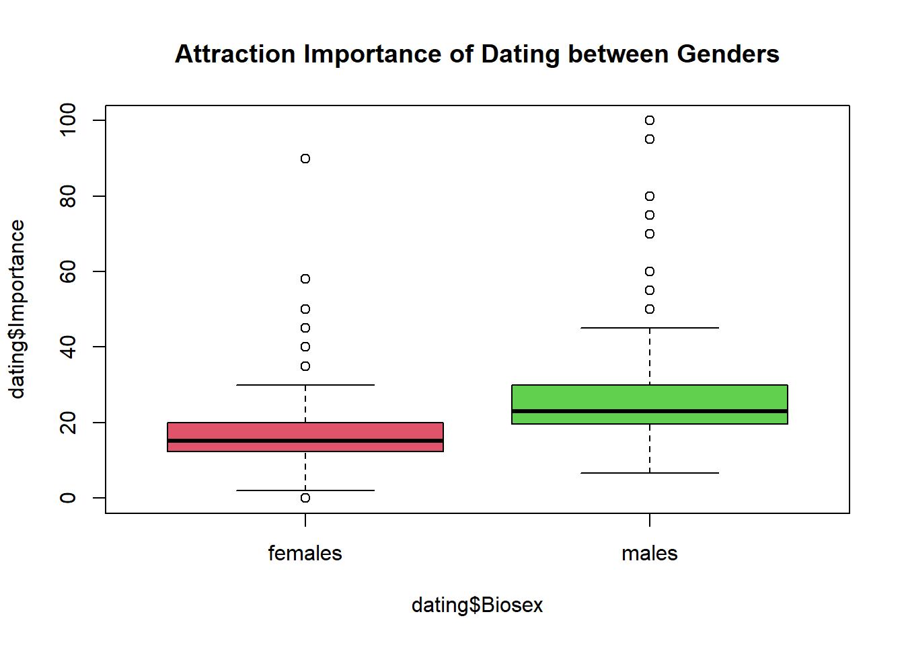
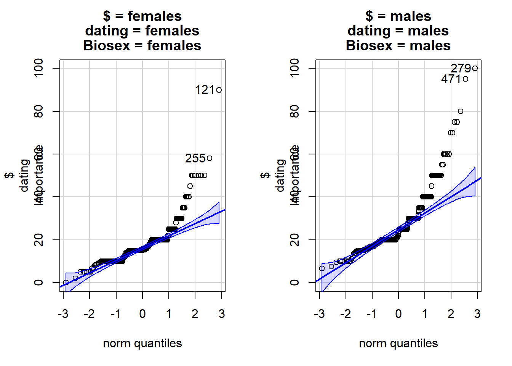
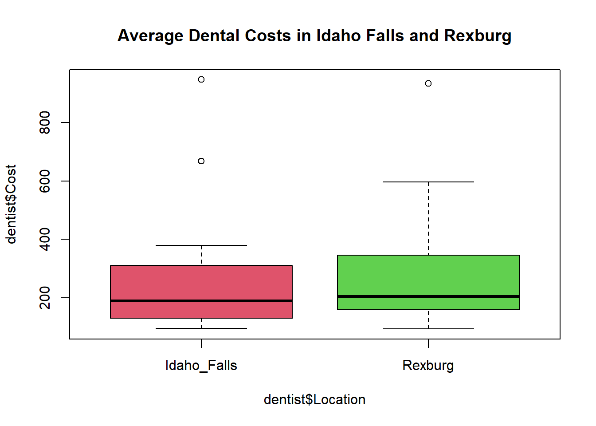
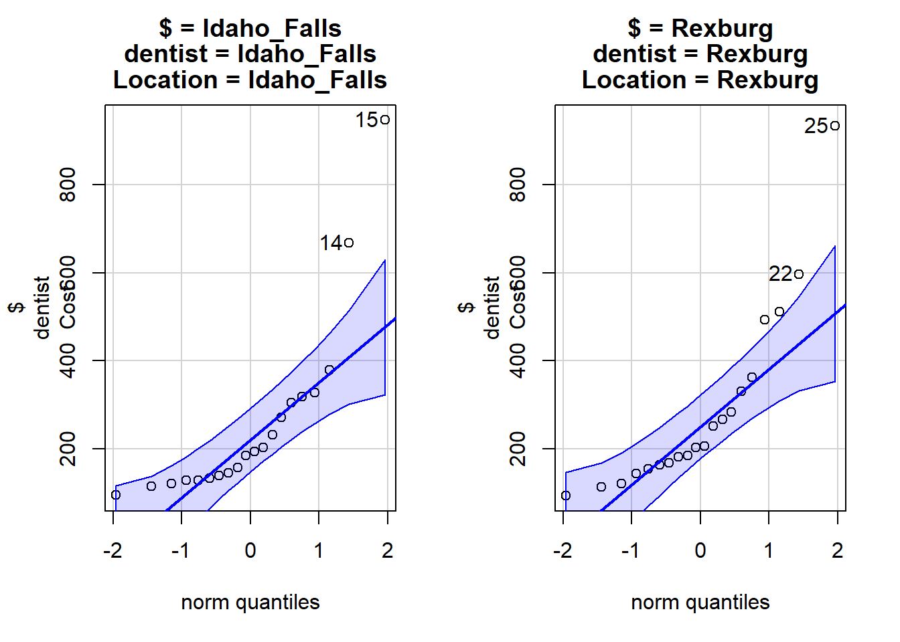
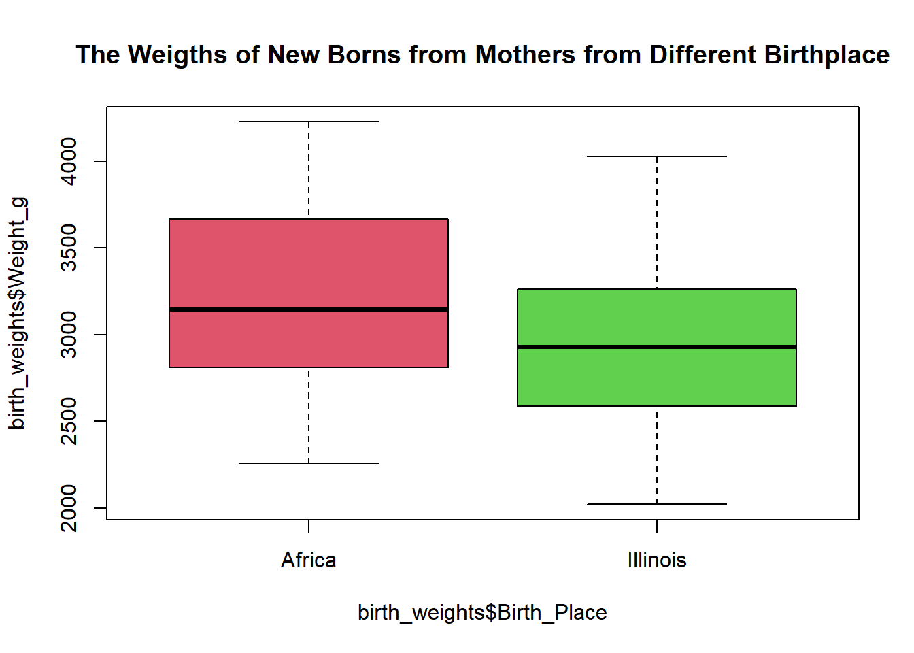
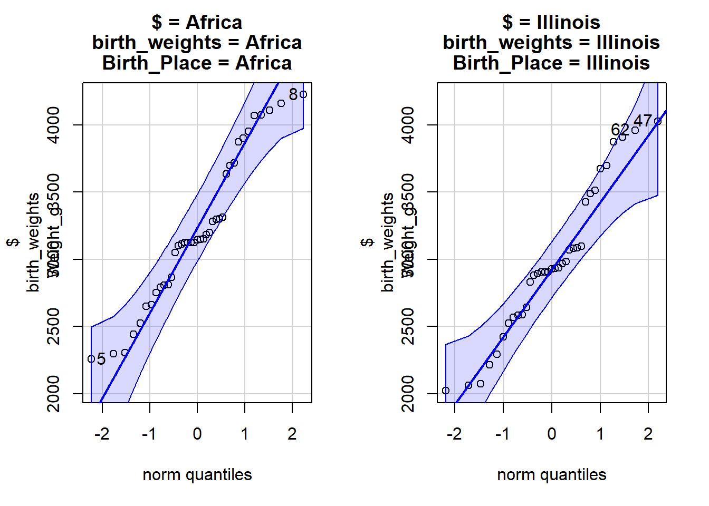

# Load the libraries
library(rio)
library(mosaic)
library(tidyverse)
library(car)2-Sample Independent T-Test Practice
Instructions
Here are several opportunities to practice analyzing 2-sample independent t-tests using R. For each question, you will:
- Read in data
- Identify the Response and Independent variable
- Create data summaries (numerical and graphical)
- Statistically analyze the data
- Check for the suitability of the statistical test (CLT, Normality)
- State your hypothesis test conclusions and interpret your confidence intervals
When you finish, render this document and submit the .html in Canvas.
It’s a Date!
Dating Behavior was studied in a speed dating experiment where random matching was generated and created randomization in the number of potential dates. In a survey to each participant, one question was asked about how important attraction is when they date. The attraction value is on a scale from 0 (not important at all) to 100 (very important).
The researchers want to determine if males report to value attractiveness more than females. Use a level of significance of 0.05.
Load the Data
dating <- read_csv('https://github.com/byuistats/Math221D_Course/raw/main/Data/dating_attractive_longformat.csv')
view(dating)Explore the Data
Question: What is the response variable?
Answer: Importance score
Question: What is the explanatory variable?
Answer: Biosex
Create a side-by-side boxplot for the amount of reported importance of attractiveness for each biosex.
Add a title and change the colors of the boxes.
boxplot(dating$Importance ~ dating$Biosex, main = "Attraction Importance of Dating between Genders", col = c(2,3))
What do you observe?
Create a table of summary statistics for each group (favstats()):
favstats(dating$Importance ~ dating$Biosex) dating$Biosex min Q1 median Q3 max mean sd n missing
1 females 0.00 12.24 15.09 20 90 18.02037 9.929864 269 0
2 males 6.67 19.57 23.00 30 100 27.24880 13.955701 275 0Hypothesis Test
State your null and alternative hypotheses (replace the ??? with the appropriate symbol):
\[H_0: \mu_{F} = \mu_{M}\]
\[H_a:\mu_{F} < \mu_{M}\]
NOTE: The default for R is to set group order alphabetically. This means Group 1 = Female.
Check that the samples for both groups are normally distributed
qqPlot(dating$Importance~dating$Biosex)
Do the data for each group appear normally distributed? Yes, since the data number is big enough(>30).
Why is it OK to continue with the analysis? Yes.
Perform a t-test.
t.test(dating$Importance ~ dating$Biosex, mu = 0, alternative = "less") #mu = 0 is the default
Welch Two Sample t-test
data: dating$Importance by dating$Biosex
t = -8.9016, df = 495.36, p-value < 2.2e-16
alternative hypothesis: true difference in means between group females and group males is less than 0
95 percent confidence interval:
-Inf -7.519991
sample estimates:
mean in group females mean in group males
18.02037 27.24880 Question: What is the value of the test statistic?
Answer: t = -8.9016
Question: How many degrees of freedom for this test?
Answer: df = 495.36
Question: What is the p-value?
Answer: < 2.2e-16
Question: What do you conclude?
Answer: The p-value is small, reject the Ho. I have sufficient evidence to suggest true difference in means of attraction in dating between group females and group males is less than 0.
Confidence Interval
Create a confidence interval for the difference of the average Importance Score between both groups:
t.test(dating$Importance ~ dating$Biosex, conf.level = 0.975)$conf.int[1] -11.559206 -6.897651
attr(,"conf.level")
[1] 0.975Conclusion: I’m 97.5% confident that the true difference in means of the importance of attraction in dating between group female and group male is located between -11.559206 and -6.897651.
Tooth hurty
A simple random sample of dental bill costs was collected at offices in Rexburg and Idaho Falls. Let \(\mu_{IF}\) be the population mean of dental costs in Idaho Falls and \(\mu_{R}\) be the population mean of dentals costs in Rexburg.
We suspect that dental costs are higher in Rexburg because of less competition.
Use the data imported below to answer the following questions.
dentist <- read_csv('https://github.com/byuistats/Math221D_Course/raw/main/Data/DentistOfficeBills_longformat.csv')
glimpse(dentist)Rows: 40
Columns: 2
$ Location <chr> "Idaho_Falls", "Idaho_Falls", "Idaho_Falls", "Idaho_Falls", "…
$ Cost <dbl> 327.41, 232.76, 194.62, 378.77, 185.44, 96.32, 114.93, 133.40…Review The Data
Question: What is the response variable?
Answer: The mean of dental cost
Question: What is the explanatory variable?
Answer: The location
Create summary statistics tables of dental costs for each office:
favstats(dentist$Cost ~ dentist$Location) %>% knitr::kable()| dentist$Location | min | Q1 | median | Q3 | max | mean | sd | n | missing |
|---|---|---|---|---|---|---|---|---|---|
| Idaho_Falls | 96.32 | 132.4825 | 190.030 | 308.645 | 945.9 | 260.059 | 208.8755 | 20 | 0 |
| Rexburg | 94.15 | 162.0050 | 205.365 | 339.020 | 933.0 | 288.597 | 206.6373 | 20 | 0 |
Create a side-by-side boxplot for dental costs for each office.
boxplot(dentist$Cost ~ dentist$Location, main = "Average Dental Costs in Idaho Falls and Rexburg",col = c(2,3))
Check the normality of each group.
qqPlot(dentist$Cost ~ dentist$Location)
Question: Do the samples from both groups appear to be normally distributed? If not, is it a cause for concern for our statistical inference? Yes it is normal distributed. A: According to QQPlot graph, both groups are normal distributed.
Hypothesis Test
State your null and alternative hypotheses (replace the question marks with the appropriate symbols):
\[H_0: \mu_{IF} = \mu_{R}\]
\[H_a:\mu_{IF} < \mu_{R}\]
Perform the appropriate analysis:
t.test(dentist$Cost ~ dentist$Location, alternative = "less")
Welch Two Sample t-test
data: dentist$Cost by dentist$Location
t = -0.43437, df = 37.996, p-value = 0.3332
alternative hypothesis: true difference in means between group Idaho_Falls and group Rexburg is less than 0
95 percent confidence interval:
-Inf 82.22834
sample estimates:
mean in group Idaho_Falls mean in group Rexburg
260.059 288.597 Question: What is the test statistic?
Answer: t = -0.43437
Question: What is the P-value?
Answer: p-value = 0.3332
State your conclusion: Since the p-value is big enough(0.3332 > 0.05), I have sufficient evidence to suggest than the true difference of dental cost between Idaho Falls(260.059) is less than Rexburg(288.597).
Confidence Interval
Create a confidence interval for the difference in costs between the IF and Rexburg offices:
t.test(dentist$Cost ~ dentist$Location, conf.level = 0.95)$conf.int[1] -161.5398 104.4638
attr(,"conf.level")
[1] 0.95Explain the confidence interval in context of the research question: I’m 95% confident that the true difference of dental cost in means between Idaho Falls and Rexburg is located between -161.5398 and 104.4638.
Birth Weights
A study was conducted in which researchers obtained birth weights of infants born in Illinois during the same year. The birth weights are categorized based on the race and birthplace of the mother. Researchers want to know if there is a difference in mean birth weights of babies born to black women who were born in the United States and babies born to black women who were born in Africa. Values were recorded (in grams) for each infant born. The data are recorded in the file.
Let \(\mu_A\) be the population average of babies born to African-born mothers and \(\mu_{IL}\) be the population mean weight of babies born to mothers in Illinois.
Use the data imported below to answer the following questions.
birth_weights <- read_csv('https://github.com/byuistats/Math221D_Course/raw/main/Data/IllinoisBirthWeightsTwoVar_longformat.csv')
glimpse(birth_weights)Rows: 78
Columns: 3
$ Comments <chr> "Data representative of results published in:", "David, Ri…
$ Birth_Place <chr> "Africa", "Africa", "Africa", "Africa", "Africa", "Africa"…
$ Weight_g <dbl> 2790, 3283, 3148, 3101, 2257, 2307, 3125, 4225, 3199, 3125…Review The Data
Question: What is the response variable?
Answer: weight_g, which is the weight of new born
Question: What is the explanatory variable?
Answer: Birth_Place, which is the birth place of the mother of the new born
Create summary statistics tables of birth weights for each country:
favstats(birth_weights$Weight_g ~ birth_weights$Birth_Place) %>% knitr::kable()| birth_weights$Birth_Place | min | Q1 | median | Q3 | max | mean | sd | n | missing |
|---|---|---|---|---|---|---|---|---|---|
| Africa | 2257 | 2809.5 | 3146 | 3664.5 | 4225 | 3214.256 | 551.0440 | 39 | 0 |
| Illinois | 2022 | 2585.5 | 2928 | 3261.0 | 4028 | 2970.257 | 550.8242 | 35 | 4 |
Create a side-by-side boxplot for birth weights for each country:
boxplot(birth_weights$Weight_g ~ birth_weights$Birth_Place, main = "The Weigths of New Borns from Mothers from Different Birthplace" ,col = c(2,3))
Check the normality of each group.
qqPlot(birth_weights$Weight_g ~ birth_weights$Birth_Place)
- Question: Do the samples from both groups appear to be normally distributed? If not, is it a cause for concern for our statistical inference?
- According to the QQPlot and number of data, both of the groups are normal distributed.
Hypothesis Test
State your null and alternative hypotheses (replace the question marks with the appropriate symbols):
\[H_0: \mu_{A} = \mu_{IL}\]
\[H_a:\mu_{A} > \mu_{IL}\]
Perform the appropriate analysis:
t.test(birth_weights$Weight_g ~ birth_weights$Birth_Place, alternative = "greater")
Welch Two Sample t-test
data: birth_weights$Weight_g by birth_weights$Birth_Place
t = 1.9021, df = 71.149, p-value = 0.0306
alternative hypothesis: true difference in means between group Africa and group Illinois is greater than 0
95 percent confidence interval:
30.22088 Inf
sample estimates:
mean in group Africa mean in group Illinois
3214.256 2970.257 Question: What is the test statistic?
Answer: t = 1.9021
Question: What is the P-value?
Answer: p-value = 0.0306
State your conclusion: Since the p-value is small (0.0306 < 0.05), I have sufficient evidence to suggest the newborns from the African-born mothers is heavier than the the newborns from the Illinois-born mothers.
Confidence Interval
Create a confidence interval for the average difference in weights between babies born to mothers in Africa and Illinois:
t.test(birth_weights$Weight_g ~ birth_weights$Birth_Place, conf.level = 0.95)$conf.int[1] -11.76601 499.76455
attr(,"conf.level")
[1] 0.95Explain the confidence interval in context of the research question:
I’m 95% confident to suggest the average weight difference between newborns from Africa-born mothers is -11.76601 to 499.76455 grams heavier than the newborns from Illinois-born mothers.
Miscellany
Question: A financial economist is studying married couples in which both spouses work. He wants to compare the mean income earned by husbands with the mean income earned by their wives. Should he use independent sampling or dependent sampling, and why? Answer: He should use dependent sampling since husband and wife are related. For one group, if you choose husband, than another group, or the corresponding sample would be his wife. Vice versa.